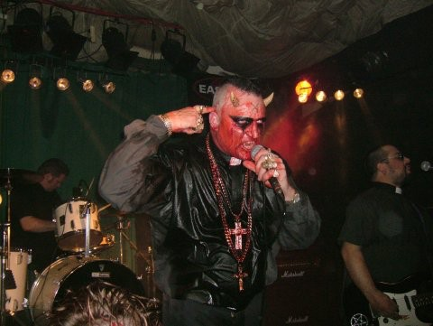
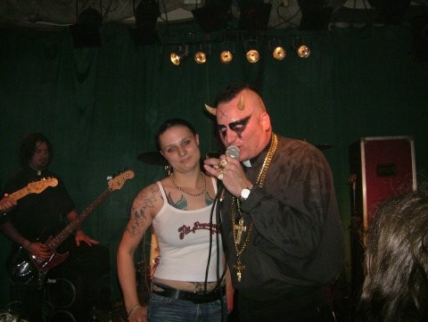

0
Ring frei
Sabotakt
Bist du so weit?
Allen Wrench
Ja, bin so weit.
Sabotakt
Okay, ich stell dich vor. Hier ist Sabotakt, zusammen mit Pogoradio, am 30. April 2005. Und hier ist der größte Punkrocker des Universums, von Kill Allen Wrench.
Allen Wrench
Genau so ist es, Jungs und Mädels. Hier ist Allen Wrench, internationaler Superstar, und er feiert mit euch, live auf Pogoradio. Meine Damen und Herren, es geht los.
Sabotakt
Ab in den Backstage. Komm schon, Mann. Wir brauchen die Kamera. Ich hab eine Frage, eine einzige, danach kann Tina alles fragen.
1
Die eine Frage
Allen Wrench
Zuerst mal muss ich sagen: Ich freu mich sehr, Tina wiederzusehen, und ihre Titten sind genauso groß wie beim letzten Mal.
Tina
Deine sind seit dem letzten Mal aber auch größer geworden.
Allen Wrench
Tja, das passiert, wenn man ein fetter Ami ist wie ich.
Sabotakt
Okay, Mann. Meine Frage ist: Du sollst ja der größte Punkrockstar der Welt sein, verstehst du? Du benimmst dich wie der Teufel, aber ich glaube nicht, dass du der Teufel bist. Ich glaube, du bist einfach ein alter Mann. Ich mag deine Show, aber ich hab gehört, deine letzte Platte ist drei Jahre her. Also, was hat Allen von Kill Allen Wrench uns Neues zu erzählen? Lass mal was hören.
Allen Wrench
Redest du von Aufnahmen, also von Musik? Ist es das, was du fragst? Ich versteh nicht ganz, was du wissen willst.
Sabotakt
Ich frag nach echtem Punk, verstehst du? In zwei Minuten erzähl ich dir, was ich mache, denn ich hab hier meine Boxhandschuhe. In fünf Minuten fordere ich dich zum Boxkampf. Also erzählst du deine Geschichte besser jetzt, denn in fünf Minuten ist deine Nase gebrochen.
Allen Wrench
Erstens: Ich boxe nicht.
Sabotakt
Wieso, machst du Judo? Ich mach alles. Ist mir egal.
Allen Wrench
Fußball spiel ich auch nicht. Ich mach Judo, ich boxe nicht. Und zweitens, zur Musik: Ich arbeite gerade an der neuen Platte von Kill Allen Wrench. Ich hab das Kill-Allen-Wrench-Studio auf eine analoge Zwei-Zoll-Bandmaschine umgebaut, und ich arbeite am neuen Fernsehstudio.
Sabotakt
Warum dauert das so lange? Drei Jahre ist das jetzt her, dass du …
Allen Wrench
Ja, das dauert, weil ich Tontechnik endlich als ernsthaftes Hobby angefangen habe. Bis ich genug Geld und alles zusammenhabe, um das Studio neu aufzubauen, braucht es eben seine Zeit.
2
Milch in Gallonen
Allen Wrench
Und das ist sehr teuer.
Sabotakt
Okay. Ja, ja. Blabla, ernsthaftes Hobby. Ich war letztes Jahr ja auch in den USA, auf Hawaii, in Los Angeles, überall. Und ich glaube, das Problem ist: Bei Walmart kriegst du Milch nur in zwei Gallonen, nicht im Liter. Was ist euer Problem, ihr verfickten Arschlöcher? Ihr habt Angst vor Schwulen. Ich bin schwul, ich liebe M. Pakalolo, und ich bin stolz drauf. Und ich glaube, ihr habt nur Angst vor Schwulen, weil euer Schwanz zu klein ist.
Allen Wrench
Oh ja, ich hab einen kleinen Schwanz. Aber Angst vor Schwulen hab ich nicht.
Sabotakt
Ja, ich auch.
Allen Wrench
Ich will sie nur nicht auf den Konzerten sehen, verstehst du? Ich geh auf Konzerte, um richtig heiße Frauen mit großen Titten zu sehen, so wie Tina hier. Es verdirbt einem die Show, wenn da ein Haufen nackter Typen ihre Schwänze rausholt, so wie die Jungs hier gerade.
Sabotakt
Okay. Was du machst, ist: Du redest drei Minuten lang Tina hier, Tina da, nur damit Tina ihre Titten zeigt. Tinas Titten sind mir doch egal. Das Problem ist offensichtlich … Ach, ich hab vergessen, was ich sagen wollte.
Okay, wir machen ein Interview mit Allen Wrench von Kill Allen Wrench …
Allen Wrench
Nee, ich mag das Belästigungsvideo. Die Belästigung läuft bisher ganz gut.
3
Piercings
Sabotakt
Ich hab eine Frage an dich.
Allen Wrench
Okay, schieß los.
Sabotakt
Ich kann was zu Tina sagen. Das Problem ist: Tina hat ein Bridge-Piercing, und ich bin professioneller Piercer. Was Tina nicht weiß: Der Trigeminusnerv läuft mitten durch ihr Gesicht, genau oberhalb der Nase. Das ist sehr gefährlich, was sie da trägt. Ihre anderen Piercings kenn ich nicht, die sind mir egal, aber das hier ist richtig gefährlich, und sie weiß es nicht.
Pogoradio
Ist das gefährlich?
Sabotakt
Ja, gefährlich. Gefährlich. Selbstmord.
Allen Wrench
Könnte Selbstmord sein.
Sabotakt
Hast du ein Piercing am Schwanz oder so? Hast du überhaupt einen?
Allen Wrench
Früher war mein Schwanz gepierct. Die Erste, die mir den Schwanz gepierct hat, war ein Mädchen namens Jen, die hatte eine Band namens Jenna Tortures. Das war 1989. Heute sind Piercings total out. Hab ich vor 15 Jahren machen lassen. Also, Piercings heute … Nein. Okay, ich hab nichts gesagt.
4
Der Teufel Hauptkampf
Sabotakt
Du siehst aus wie der Teufel, okay. Und die anderen Jungs sehen aus wie Priester.
Allen Wrench
Ja.

Sabotakt
Aber man kann nicht einfach so aussehen wie der Teufel. Was macht dich dazu?
Allen Wrench
Ich fang einfach so an, wie der Teufel auszusehen.
Sabotakt
Aber was macht dich zum verdammten Teufel? Das will ich erklärt haben.
Allen Wrench
Erstens: Ich bin nicht der Teufel. Ich bin Allen Wrench, internationaler Superstar. Wenn ihr glaubt, ich bin der Teufel, liegt ihr falsch. Ich bin viel größer als das. Ich bin Alkoholiker.
Sabotakt
Du bist Alkoholiker? Das macht dich total Anti-Punk.
Allen Wrench
Aber gleichzeitig bin ich Straight Edge.
Sabotakt
Allen Wrench, ich fordere dich zum Armdrücken heraus, jetzt sofort. Der Gewinner ist der Teufel. Gewinnst du, bist du der Teufel. Gewinne ich, bin ich der Teufel. Auf den Tisch, nimm dir einen Stuhl. Bier weg.
Stimmen
„Los, gib dein Bestes. Bereit?“ – „Hey, komm schon, Tina, versuch’s mal!“ – „Ich versuch’s ja!“ – „Ach komm, Allen, jetzt mal im Ernst!“
Allen Wrench
Ich mach kein Armdrücken, ich bin der schlechteste Armdrücker überhaupt. … Okay, ich versuch’s. Ich mach’s.
Szene
Armdrücken am Tisch. Allen Wrench verliert.
Allen Wrench
Willst du mich verarschen, Motherfucker? Was ist das denn? Ich bin geschockt, ich fass es nicht. Scheiße, Mann, mein Arsch ist hin. Ich hab beim Armdrücken voll auf den Arsch gekriegt. Könnt ihr das glauben?
Ergebnis Hauptkampf
Allen Wrench verliert das Armdrücken.
Teufelstitel: nicht für Allen Wrench.
Ich bin nicht der Teufel. Ich bin viel größer. Ich bin Alkoholiker.
Allen Wrench, blaue Ecke
5
38 gegen 23
Sabotakt
Wie alt bist du?
Allen Wrench
Im August werd ich 38.
Sabotakt
Aber wir sind echte Punkrocker. Du bist 38 und aus den USA, wir sind 23 und aus Deutschland. Aber wir sind die, die weitermachen, was du machst, verstehst du?
Allen Wrench
Genau, und deswegen bin ich verdammt noch mal hier unten, um mit euch zu feiern, ihr Motherfucker. Lasst bloß die Hosen an.
Sabotakt
Warum?
Allen Wrench
Ich mag’s nicht, wenn Typen die Hosen runterlassen, Mann. Die vergraulen die Mädels.
Wir sind die, die weitermachen, was du machst.
Sabotakt, rote Ecke
6
Odin, Durchfall und der Papst
Sabotakt
Also, zurück zu Tinas Titten. Was ist mit Tinas Titten?
Allen Wrench
Ich will …
Sabotakt
Hey Allen, kommst du nur nach Deutschland, um was zum Vögeln zu finden, oder was? Dann geh doch in den Puff.
Allen Wrench
Ich hab mir in Berlin eine Freundin gekauft. Ich hab Hämorrhoiden.
Sabotakt
Ich bin Deutscher, ich glaube an Odin. Was heißt Durchfall auf Englisch?
Allen Wrench
Ach so: „diarrhea“.
Sabotakt
Diarrhea, Mann. Weil in Deutschland überall nur verdammter Dünnschiss ist.
Was hältst du eigentlich vom neuen Papst?
Na ja, der ist Bayer. Der ist kein Deutscher.
Allen Wrench
Die Sache mit Kill Allen Wrench ist: Kill Allen Wrench macht keine politischen Statements. Wir sind nicht politisch. Wenn du so was fragen willst, frag Jello Biafra.
Sabotakt
Jello Biafra ist super, ich liebe Jello Biafra. Bist du Palästinenser?
Allen Wrench
Amerikaner.
7
Riverside
Pogoradio
Wo in den USA kommst du her?
Allen Wrench
Los Angeles.
Sabotakt
Ich heiße Captain Machmud, er heißt M. Pakalolo. Wir haben letztes Jahr eine Welttournee gemacht und waren auch in Los Angeles. Wir waren am Venice Beach.
Allen Wrench
Eigentlich komm ich aus einer Gegend etwas außerhalb, Riverside. Da gibt’s keine Livemusik, da passiert gar nichts. Deshalb feier ich hier.
8
Tinas 20 Fragen
Pogoradio
Tina hat 20 Fragen für dich vorbereitet. Mit welcher Band würdest du am liebsten spielen?

Allen Wrench
Ich wollte immer mit Judas Priest spielen. Aber die Band, mit der wir spielen sollten, ist Turbonegro, glaube ich. Wir sollten mal in Hollywood mit denen auftreten, sind aber wegen schwulenfeindlicher Sprüche aus der Show geflogen.
Pogoradio
Wie oft werden eure Konzerte abgesagt, weil ihr sexistisch oder homophob seid?
Allen Wrench
Oft buchen sie uns gar nicht erst.
Pogoradio
Werdet ihr mit Bands wie GWAR verglichen?
Allen Wrench
Wir sind keine GWAR-Band, wir sind keine Schockband. Wir sind nicht Punkrock, wir sind Drunk Rock.
Pogoradio
Wie oft pro Woche bist du betrunken?
Allen Wrench
Ich trinke nicht viel, aber oft. Also muss ich wohl sagen: sieben. Ich geh zur Tankstelle und kauf Pabst Blue Ribbon.
Pogoradio
Warst du schon mal in Las Vegas?
Allen Wrench
Zehn Millionen Mal. Die großartigste Stadt der Welt. Da ist 24 Stunden am Tag Party.
Sabotakt
Wir sind von L. A. durchs Death Valley nach Las Vegas gefahren, haben uns ein Apartment genommen, Kokain und Bier gekauft und mit den Leuten auf der Straße ein Musical gemacht.
Heute schenken wir dir unseren Film auf DVD, er heißt „Bonobo“. Gratis, aber du musst uns per E-Mail eine Kritik schicken.
Wir sind nicht Punkrock. Wir sind Drunk Rock.
Allen Wrench, blaue Ecke
9
Eimer und Käfig
Stimmen
„Hey, der pisst in den Eimer!“ – „Aufnehmen!“
Tina
Rüdi hat mir erzählt, du hast früher Käfigkämpfe gemacht?
Allen Wrench
Ich hatte einen Käfigkampf.
Sabotakt
Wir sind Sabotakt, die Mischung aus Sabotage und Takt. Wir haben in ganz Deutschland Boxkämpfe und Punkrock-Partys gemacht. Amateurboxen mit Handschuhen, ohne Helm. Jeder kann mitmachen.
10
Sasquatch und Italien
Pogoradio
Ist euch mal was Lustiges passiert?
Allen Wrench
In den USA gibt’s ein Monster namens Sasquatch. Da war mal ein Mädchen, die war so hässlich und ich war so betrunken: Die war ein Sasquatch. Meine Sasquatch-Freundin ist in den Wald entkommen.
Pogoradio
Hast du Angst vorm Älterwerden?
Allen Wrench
Nein, ich bin ja schon alt.
Wir waren mal auf Tour in Italien. Da standen ganz normale Modeleute vor der Bühne, keine Punkrocker. Total bizarr, aber sehr cool.
★
Schlussgong
Allen Wrench
Pogoradio, 105,4. Guten Abend, meine Damen und Herren, hier ist Allen Wrench, internationaler Superstar, und ihr hört Pogoradio auf UKW. Und jetzt hol ich die Messer raus und richte ein bisschen Schaden an, Baby.
Stimme
„105,7, du Idiot!“
Aus dem Englischen übersetzt und leicht gekürzt, Wiederholungen und Versprecher sind raus. Die Sprecher sind nach dem Gesprächsverlauf zugeordnet: Matze und Tarek stehen gemeinsam als „Sabotakt“, Tina und Rüdi als „Pogoradio“, Tina nur dort, wo sie klar zu erkennen ist. Ohne Aufnahme ist die Zuordnung nicht an jeder Stelle sicher.